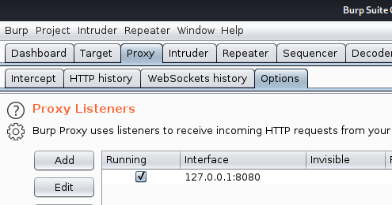

Burpsuite > Proxy > Options
- Proxy Listeners : 127.0.0.1:8080

Proxy :
- FoxyProxy (see page)
- or Manual :
Firefox > Preferences > General > Network Proxy > Settings > Manual Proxy configuration
- HTTP Proxy : 127.0.0.1
- Port : 8080
- Use this proxy server for all protocols : yes

Reload https://auth.tesla.com/login
Burpsuite > Proxy > Intercept > Intercept is on

=> Is working
- Intercpet off for page to load
If no certificate : - - http://burp
- - CA Certificate

- - download cacert.der
- - Firefox > Preferences > Privacy & Security > Certificates > View Certificates > Import > cacert.der
- Trust this CA to identify websites : yes
- Trust this CA to identify email users : yes